Centro Italia · Provincia di Rieti · Lazio
Giungendo a Rieti per la prima volta, sicuramente salterà agli occhi di un buon osservatore come Rieti sia una città a misura d'uomo: il centro storico si attraversa a piedi in venti minuti, le distanze si misurano in passi più che in km, e la sicurezza e la tranquillità delle vie fanno da cornice a un ambiente naturale che in pochi capoluoghi italiani è ancora possibile trovare. È un posto ideale per chi vuole concentrarsi sullo studio senza rinunciare a vivere una città vera.
Affacciata su Piazza Cesare Battisti, la Cattedrale di Santa Maria Assunta è il cuore simbolico della città: fondata nel XII secolo, fu più volte sede papale nel corso del Medioevo. Il suo campanile romanico, alto quasi 40 metri, si vede da gran parte del centro storico ed è uno dei primi punti di riferimento per chiunque arrivi a Rieti per la prima volta.
Intorno, un reticolo di vicoli, piazze e portici che si percorre interamente a piedi — università, biblioteche, bar e negozi sono quasi sempre a pochi minuti da qualunque alloggio in centro.
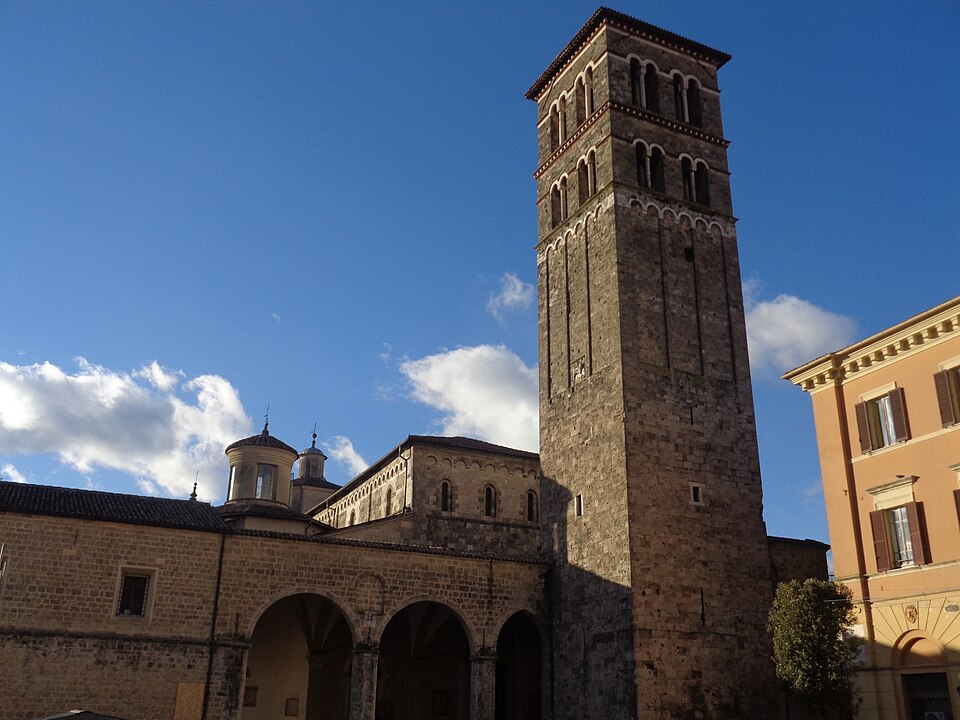
Il campanile romanico della Cattedrale, visto da Piazza Cesare BattistiIl Monte Terminillo, la "montagna di Roma", è a meno di mezz'ora d'auto dal centro: sci d'inverno, escursioni e aria fresca d'estate, senza dover pianificare un viaggio. Il fiume Velino attraversa invece la città stessa, con le sue anse che si affacciano sulle case del centro storico — una presenza costante che rende Rieti particolarmente verde per una città di queste dimensioni.
Parchi pubblici, piste ciclabili e percorsi lungo il fiume sono stati oggetto negli ultimi anni di importanti interventi di riqualificazione, molti dei quali finanziati con i fondi del PNRR: strade, edifici pubblici ed aree verdi rinnovate hanno dato al centro un volto più moderno, senza intaccarne il carattere.
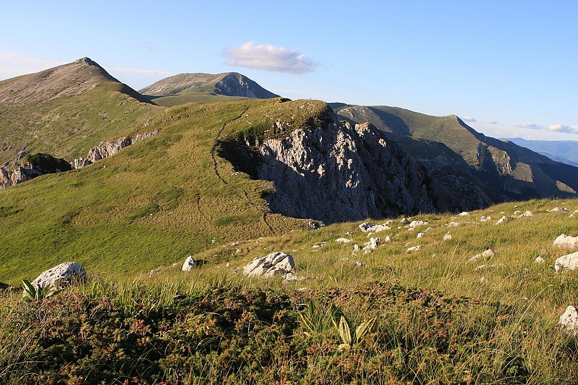
La cresta del Terminillo, la "montagna di Roma", a mezz'ora dal centroNegli ultimi anni Rieti ha visto crescere costantemente la propria vocazione universitaria. Attraverso Sabina Universitas, il consorzio che coordina il polo universitario cittadino, sono presenti in città sedi distaccate dell'Università degli Studi di Roma "La Sapienza" e dell'Università degli Studi della Tuscia. Una presenza in espansione che porta ogni anno più studenti — italiani e internazionali — a scegliere Rieti come città in cui vivere e studiare.
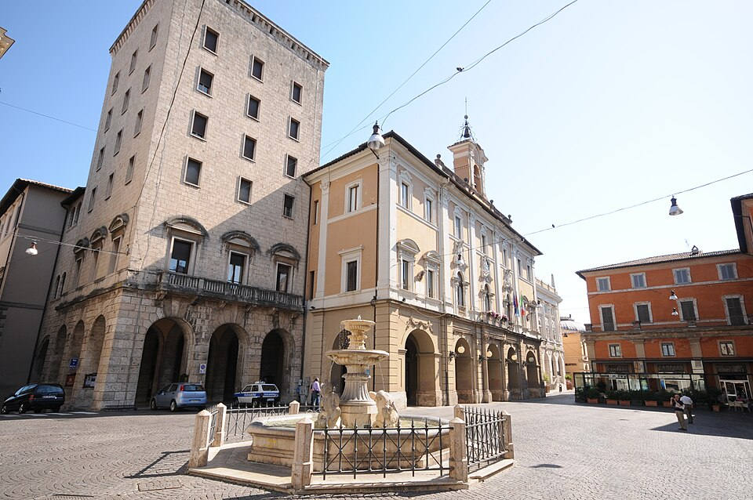
Piazza Vittorio Emanuele e Palazzo Comunale, cuore civico della cittàOgni fine agosto il centro storico si trasforma per la Fiera Mondiale Campionaria del Peperoncino: dieci giorni di stand gastronomici, centinaia di varietà di peperoncino da tutto il mondo, musica e spettacoli, con centinaia di migliaia di visitatori. Uno degli appuntamenti più attesi dell'anno in città.
fieramondialedelpeperoncino.com ↗Ogni metà luglio il fiume Velino diventa protagonista della Festa del Sole: da oltre cinquant'anni i rioni storici di Rieti si sfidano lungo il corso d'acqua in una serie di gare — dal duello con la pertica alla corsa in bicicletta sull'acqua — che culminano nel celebre Palio della Tinozza, dove un concorrente per rione avanza a colpi di remo dentro una tinozza di legno. Sfilate in costume, musica dal vivo e stand gastronomici lungo le rive accompagnano l'intera manifestazione, che richiama ogni anno migliaia di spettatori sui ponti e sulle sponde della città.
visitrieti.com ↗ SportRieti è casa della Atletica Studentesca Rieti "Andrea Milardi", la società più titolata della storia dell'atletica leggera italiana. Lo stadio Raul Guidobaldi ospita regolarmente competizioni nazionali e internazionali di primo livello, e la città viene definita ogni anno tra le prime in Italia per indice di sportività.
studentescamilardi.it ↗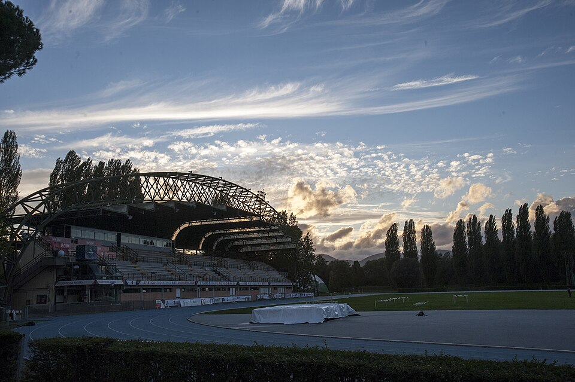
Lo stadio Raul Guidobaldi al tramonto, pista di atletica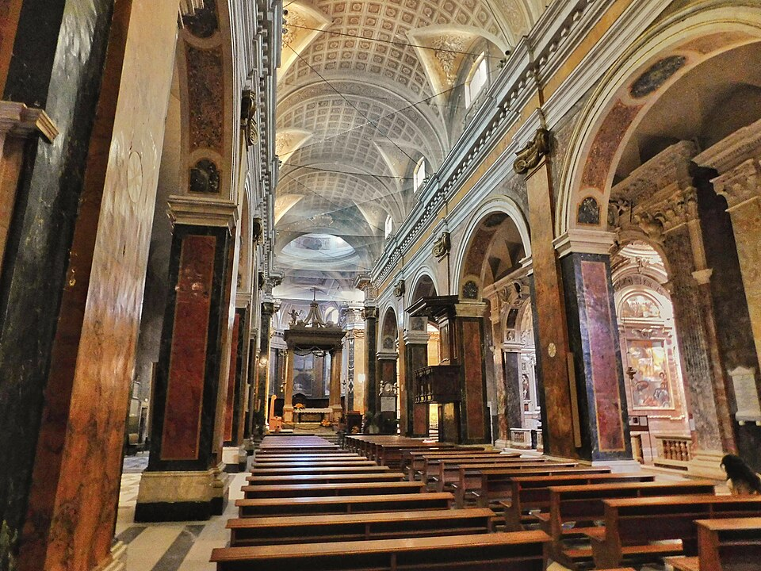
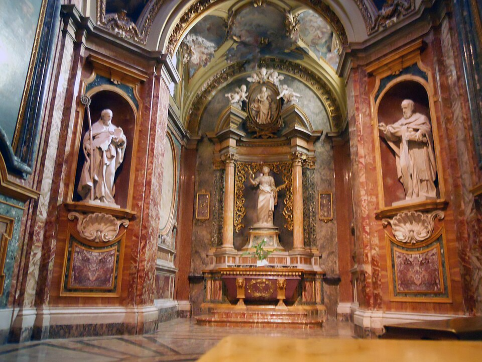
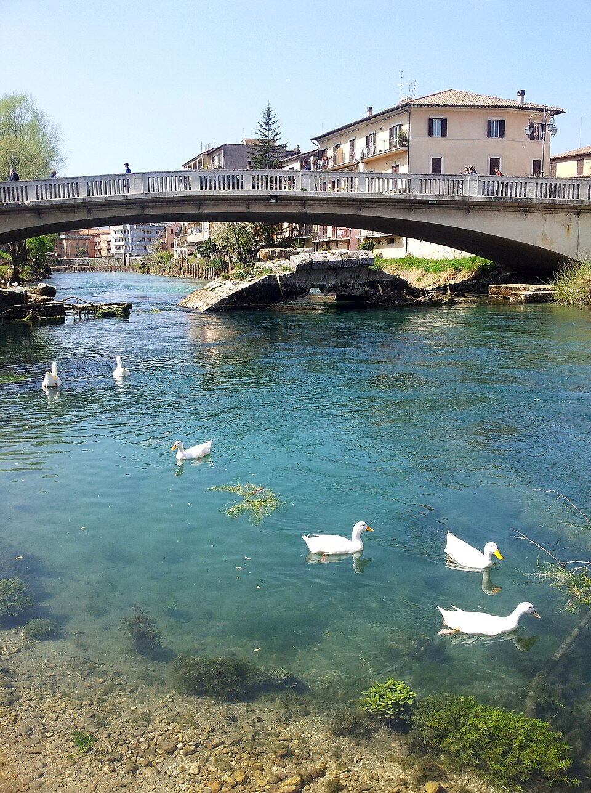
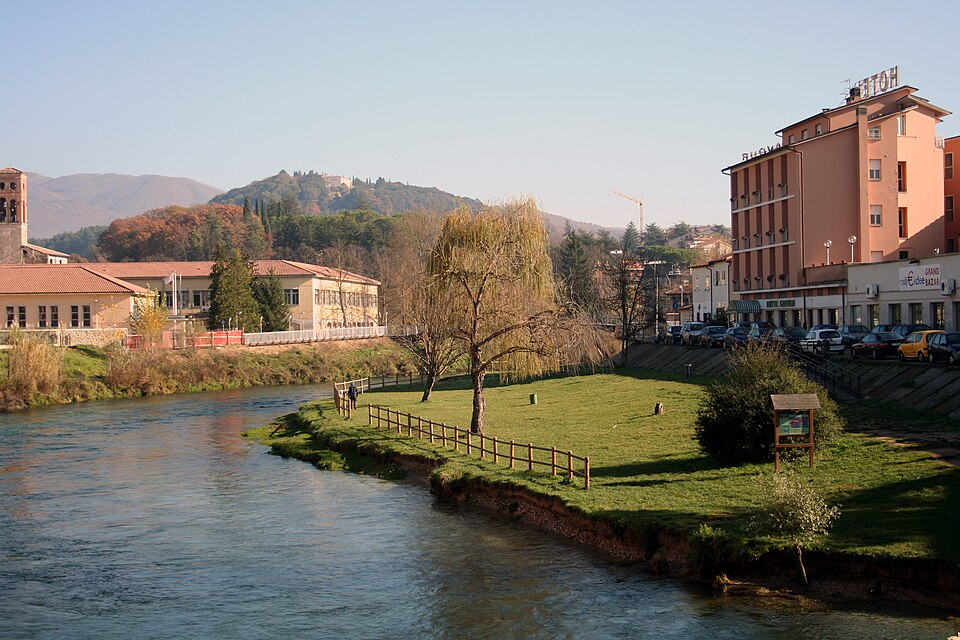
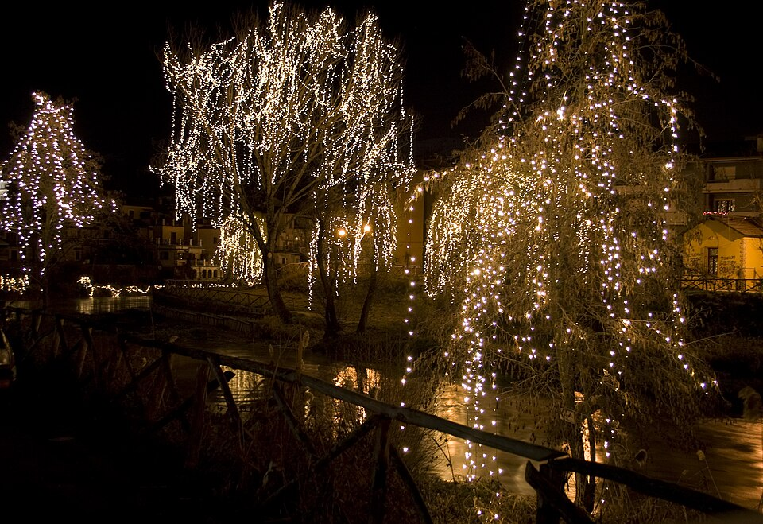
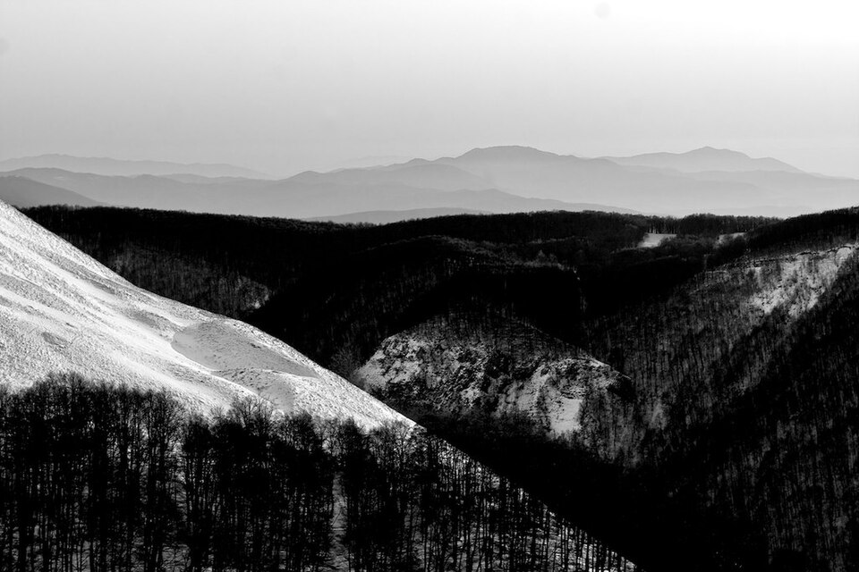
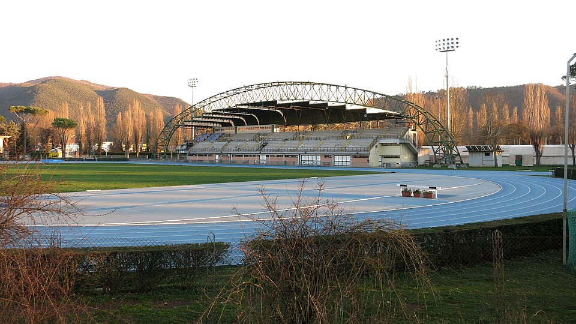
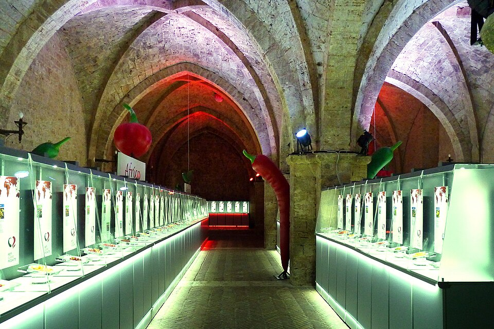
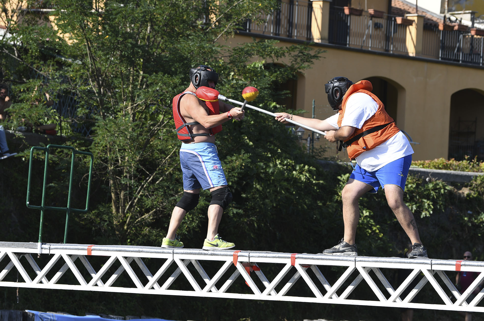
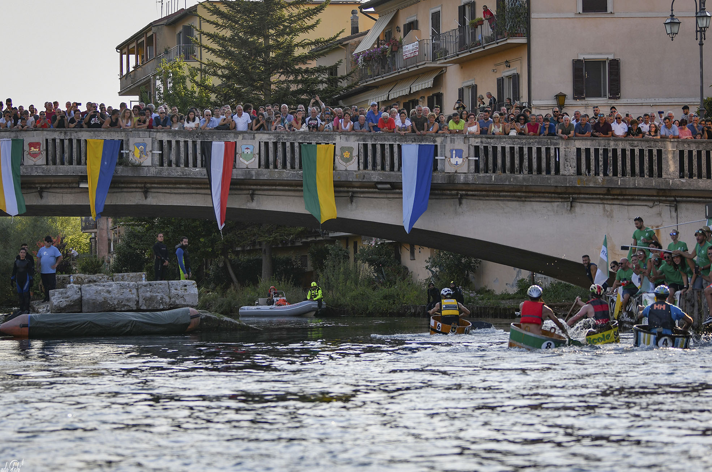
Arrivare per la prima volta in una città nuova non è mai scontato. Noi di TCD siamo a completa disposizione per orientare gli studenti che scelgono Rieti, sia per l'accompagnamento nella ricerca della soluzione abitativa più adatta, che per qualsiasi consiglio pratico per vivere al meglio la città.
Scrivici →